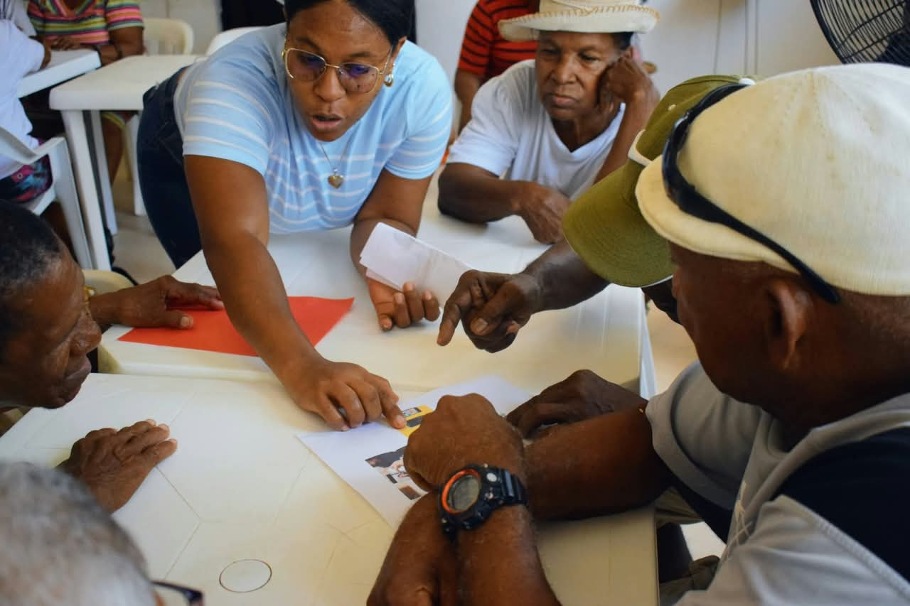
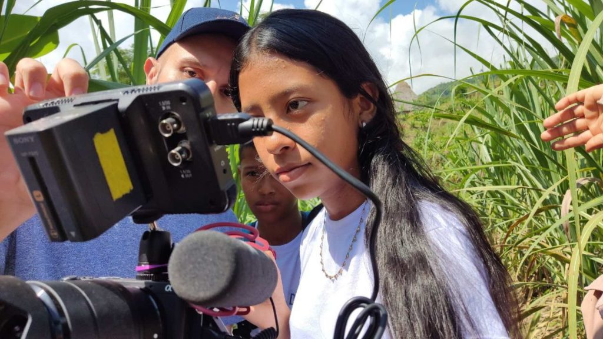
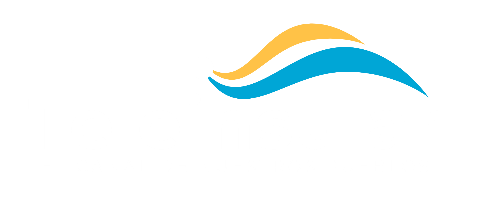

Inclusión digital
Herramientas y competencias para la vida.
Tecnología con sentido social
Construimos oportunidades desde el territorio.
Impulsamos la inclusión digital, la creación audiovisual y las iniciativas que conectan a las comunidades con nuevas oportunidades, fortaleciendo la cultura, la participación y el orgullo territorial.
Bocachica · Cartagena, Colombia
Creación audiovisual
Historias contadas desde el territorio.
Identidad territorial
Cultura, participación y memoria comunitaria.
Lo que hacemos
Oportunidades que nacen en la comunidad.
Trabajamos para acercar herramientas digitales y abrir espacios de creación y expresión que reconozcan las capacidades, experiencias y conocimientos de las comunidades insulares.
Ver todos los programas
Alfabetización e Inclusión Digital
Promovemos el aprendizaje y el uso práctico de herramientas digitales para personas de distintas edades, atendiendo necesidades reales de la comunidad.
Conocer el programa
Crea Cine Insular
Un espacio para explorar la creación audiovisual y contar historias vinculadas con la memoria, la cultura y la identidad del territorio.
Conocer el programaJuntos comunicamos ideas, conectamos propósitos y transformamos realidades.
Tecnología, cultura y participación al servicio de las personas y del territorio.
Quiénes somos
Conectamos tecnología, cultura y comunidad.
La Corporación Insular Digital impulsa iniciativas sociales y tecnológicas con enfoque territorial. Su propósito es contribuir al desarrollo de capacidades, ampliar oportunidades y abrir espacios para la participación comunitaria.
Creemos en una tecnología cercana, en el valor de las historias locales y en la construcción de iniciativas que reconozcan las capacidades de las comunidades.
Conoce nuestra identidad
PROYECTOS DE COINDI
Nuestras iniciativas
Espacios para comunicar, crear y preservar las historias, la cultura y la identidad de nuestro territorio.

COMUNICACIÓN COMUNITARIA
Teleinsular
Un espacio audiovisual para contar las historias, experiencias y realidades de nuestras comunidades.
Explorar Teleinsular →
MEDIO EDITORIAL
Revista INSU
Un espacio editorial dedicado a la cultura, la memoria y las voces de nuestro territorio.
Explorar Revista INSU →Construyamos oportunidades juntos.
Conoce nuestras iniciativas, participa en los procesos comunitarios y descubre cómo puedes apoyar el trabajo de la Corporación.